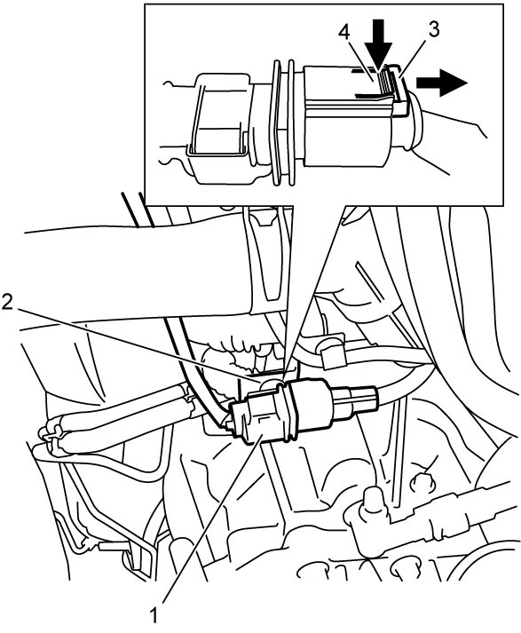
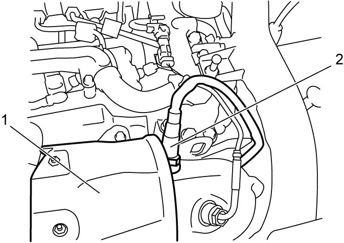
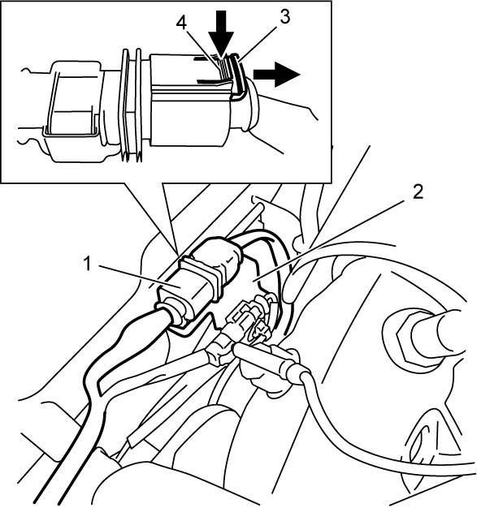
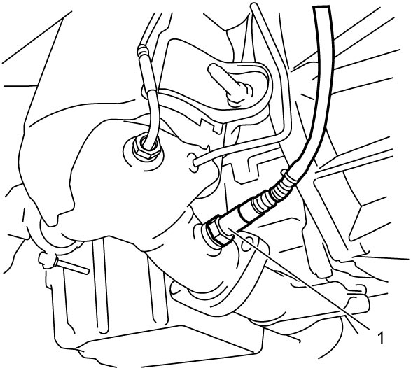

1B
| A/F Sensor Removal and Installation |
Touching a hot exhaust system component will cause a burn.
Do not perform any service work on the exhaust system until the exhaust system is cool.
NOTE:
If A/F sensor-1 is replaced, initialize A/F sensor data in ECM. This is not applied to A/F sensor-2.
For details, refer to Description of ECM Registration:D16AA.
A/F Sensor-1
Removal
1)Disconnect negative (–) cable at battery.
2)Remove engine cover. 
3)Remove battery.
4)Detach connector (1) of A/F sensor-1 from its bracket (2).
5)Disconnect connector from A/F sensor-1 as follows.

a)Move connector lock pin (3) in arrow direction as shown in figure.
b)Push connector lock lever (4) and disconnect connector from A/F sensor-1.

 "Expand image")
6)Remove exhaust manifold upper cover (1).
7)Remove A/F sensor-1 (2).

 "Expand image")
Installation
Reverse removal procedure noting the following points.
 "Expand image")
A/F Sensor-2
Removal
1)Disconnect negative (–) cable at battery.
2)Detach connector (1) of A/F sensor-2 from its bracket (2).
3)Disconnect connector from A/F sensor-2 as follows.
a)Move connector lock pin (3) in arrow direction as shown in figure.
b)Push connector lock lever (4) and disconnect connector from A/F sensor-2.

 "Expand image")
4)Hoist vehicle and remove engine undercover.
5)Remove A/F sensor-2 (1) from DPF®.

 "Expand image")